| 日付 | 2024年3月30日（土） |
|---|---|
| 山域 | 西上州 |
| メンバー | 単独 |
| 山行形態 | 日帰り |
| アクセス | 車 |
| ルート (Map) | 三段の滝登山口 (8:14) - (8:43) 三段の滝 - (9:43) 碧岩大岩分岐点 - (10:15) 大岩 (10:30) - (10:46) 碧岩大岩分岐点 - (11:06) 碧岩 (11:40) - (12:29) 三段の滝 - (13:05) 三段の滝登山口 |
西上州の奥の方に碧岩という岩峰がある。
麓から見ても目立つ山なのだが、なんせ奥地にあるため、
その姿を目にしたことはなかった。
昨年この山に登ろうとしたが家族の都合で断念。
今回は単独で挑戦してみることにする。
三段の滝登山口の駐車場に車を停める。標高540m。
駐車場とトイレまであるのはありがたいことだ。
マイナーな山と思っていたが、すでに2台の車が停まっている。
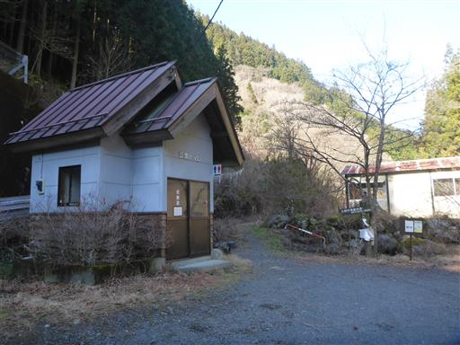
三段の滝の案内板。登山道沿いに滝があるようだ。
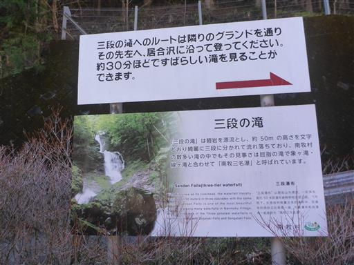
登山開始。沢沿いの道を登っていく。
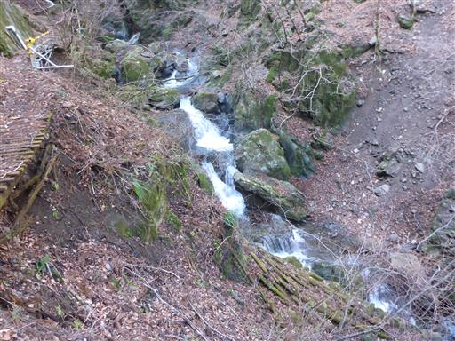
堰堤のすぐ下で沢を渡る。
水の流れが速く、ちょっとドキドキする場所だ。
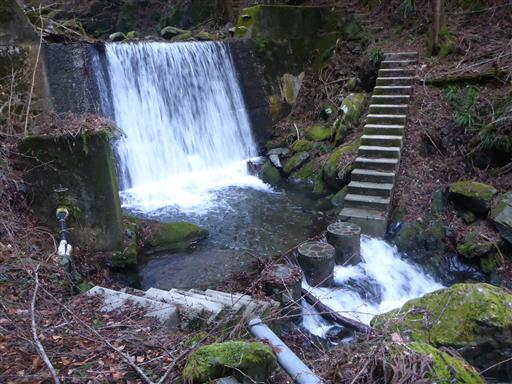
沢の途中までしか架かっていない橋。
水しぶきを浴び続けているこの木橋は表面がつるつるでよく滑る。
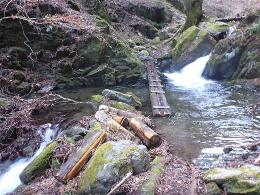
沢と木の枝に行く手を阻まれる。上部の斜面を登って迂回。
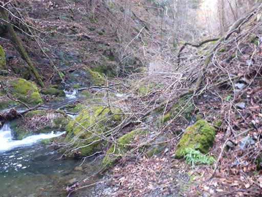
こちらは立派な橋で安心して渡れる。
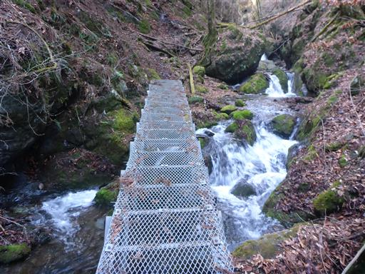
何度も何度も沢を渡る。
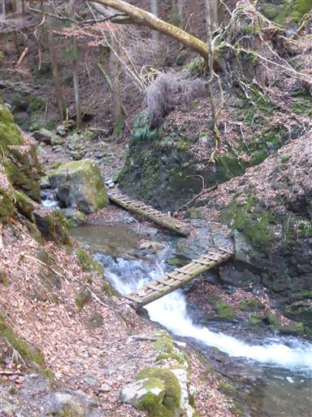
水の流れが美しい。
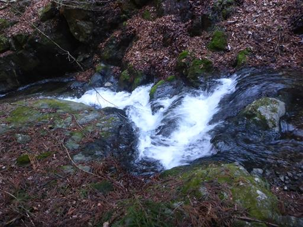
水が跳ね上がる滝。このような形の滝をヒョングリ滝という。
珍しい形の滝だ。
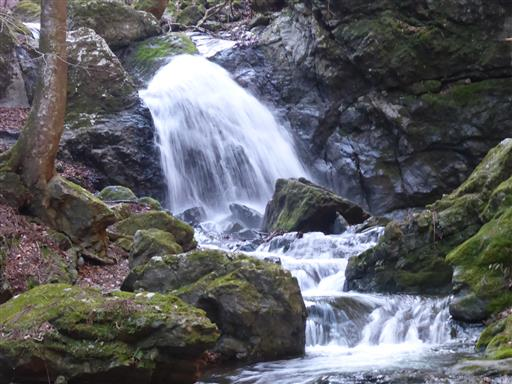
上から見下ろす。水が岩に当たって跳ね上がっている。
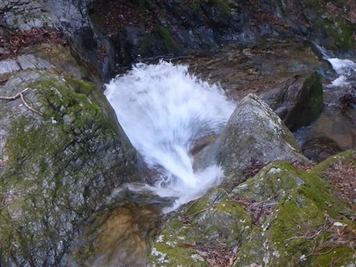
滝のそばを鉄はしごで登る。
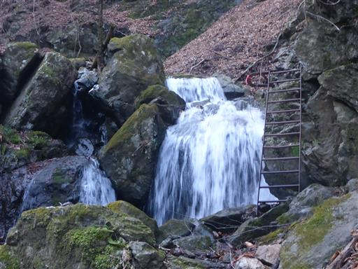
はしごを登った先。すぐ横で水が激しく流れているのでちょっと怖い場所だ。
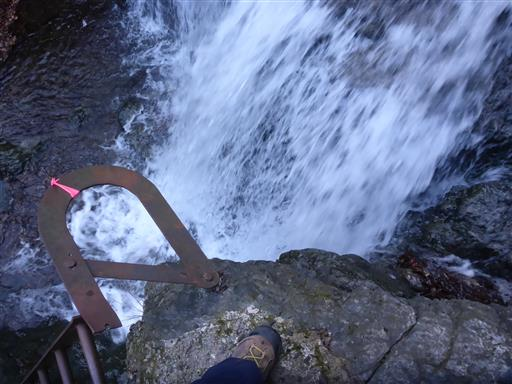
沢をさかのぼること30分、三段の滝に到着。
落差50ｍを三段で流れ落ちている。
落差、迫力、美しさ、どれをとっても素晴らしい滝だ。
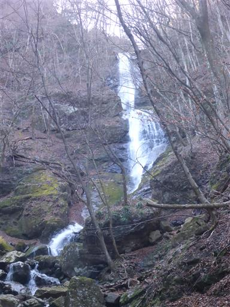
滝の中腹から一段目と二段目を見上げる。
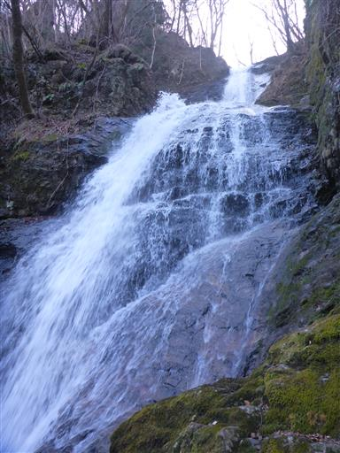
下には三段目の滝。激しく流れ落ちている。
季節がらか、昨日の雨の影響か、普段より水量が多そうだ。
沢の渡渉は大変だったが、迫力ある滝を眺められてラッキーだ。
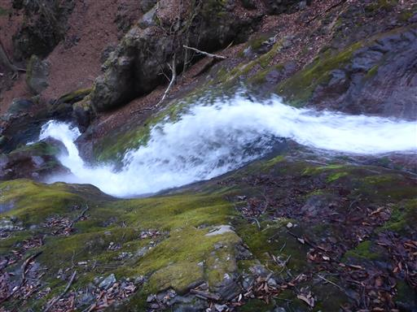
濡れた岩場をロープを使って登る。
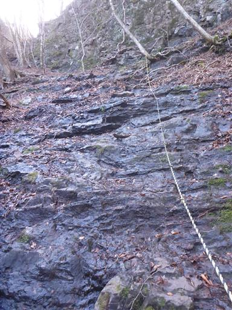
一段目の滝。これだけでも十分立派な滝だ。
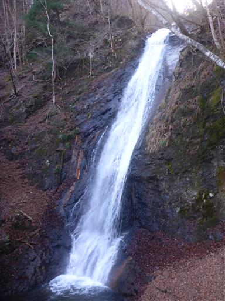
三段の滝を上から見下ろす。
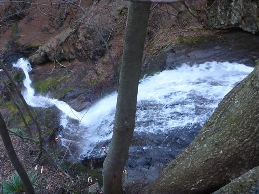
ここから先はまた穏やかな沢沿いを登っていく。
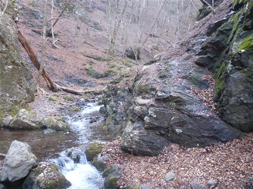
沢が二股になっている。その間の尾根の先端は尖峰だ。
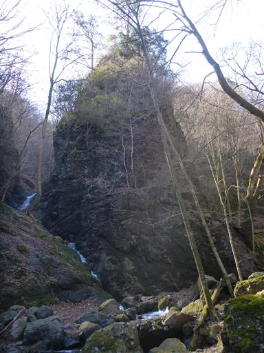
沢を離れて尖峰の裏に回り込む。ここからは稜線に向けて斜面を登る。
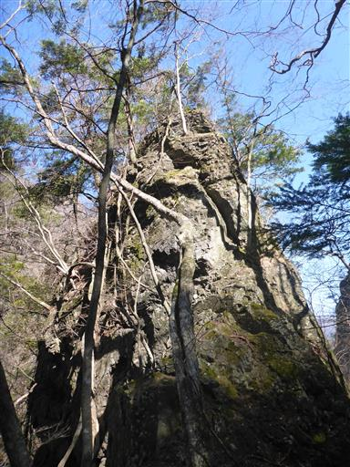
落ち葉が足首まで埋まるほど積もっている。吹き溜まりになっているところはもっと深い。
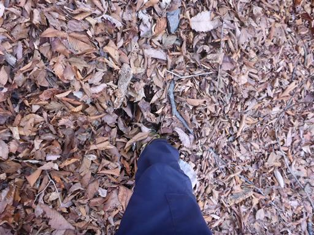
ほんの少しだけ雪が残っている。もうすぐ消えてなくなりそうだ。
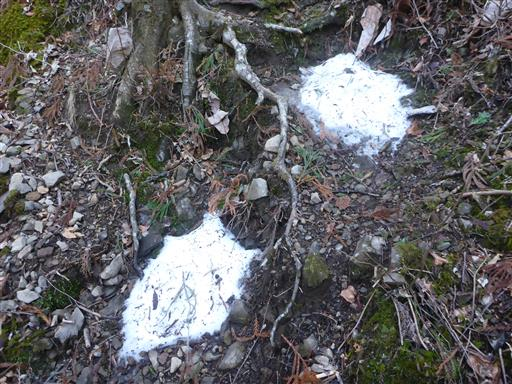
土砂崩れの跡。地面が大きくえぐれている。
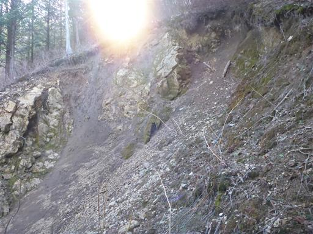
碧岩と大岩の分岐点に到着。先に大岩に登ることにする。
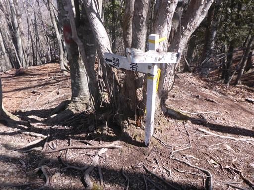
登山道から望む碧岩。驚くほど尖がっている岩峰だ。
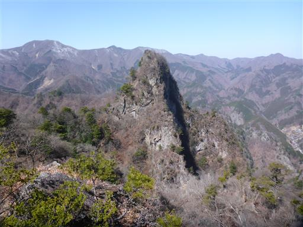
岩尾根を進んでいく。
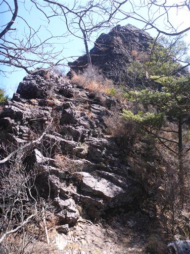
岩尾根からは大展望が広がる。立岩や毛無岩が見渡せる。
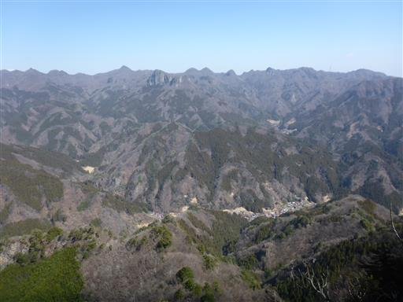
こちらは少し標高の高い山々。もう3月下旬なのに北側斜面は雪に覆われている。
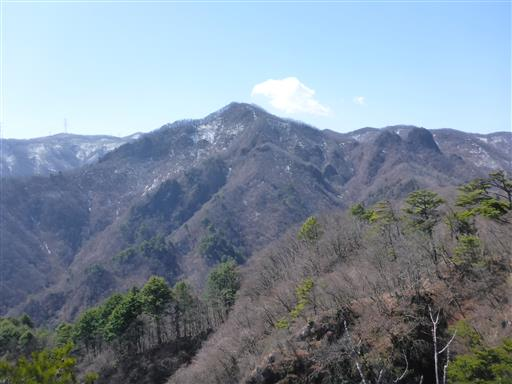
爽快な岩尾根が続く。
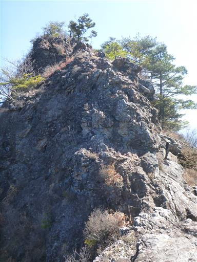
大岩山頂に到着。標高1133m。
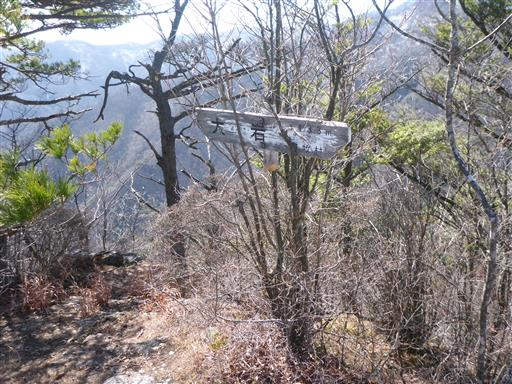
鹿岳と四ツ又山が見渡せる。懐かしい山々だ。
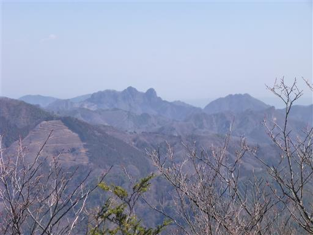
大岩山頂から東に少し歩いたところの岩棚で東側の展望が広がる。
ここで1回目の昼食休憩をとる。
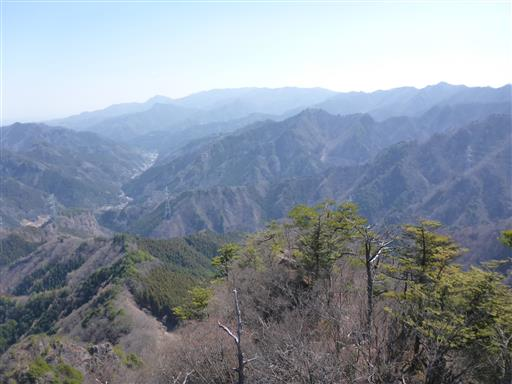
大岩からの下山道。本日は風が強く、立っているだけでもよろめく。
こういった岩尾根だと風の影響は大きい。
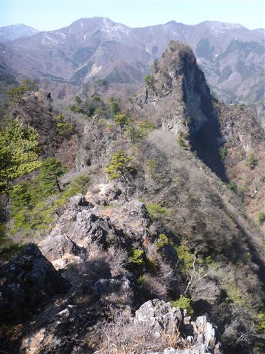
大岩を下山し、碧岩へ。最初の岩場が現れる。
こちらは比較的容易に登れる。
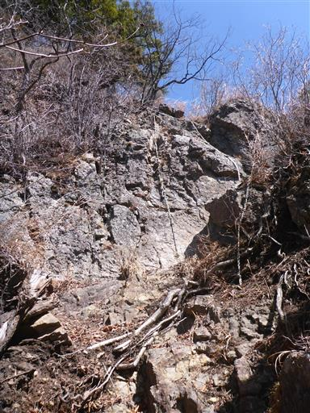
その次に出てくる岩場が難しい。
右から回り込むと登りやすいのだがそちらにはロープがない。
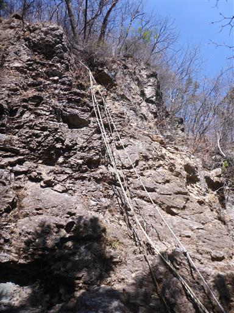
岩壁を登って少し歩くと碧岩山頂に到着する。
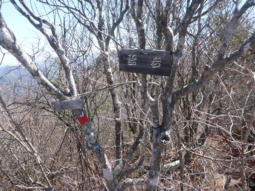
奥の方に真白な浅間山の頭が見えている。
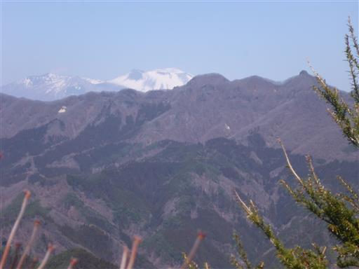
こちらは先ほど登ったばかりの大岩。こちらの山もすごく尖っている。
そして中腹は垂直の断崖が見える。
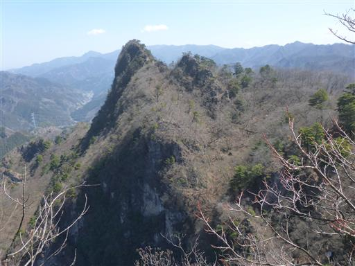
碧岩の基部に戻ってくる。ここから来た道と分かれてショートカット道を選択。
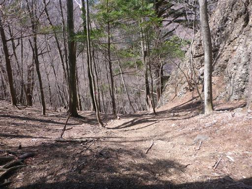
右側には碧岩の岩峰が見える。
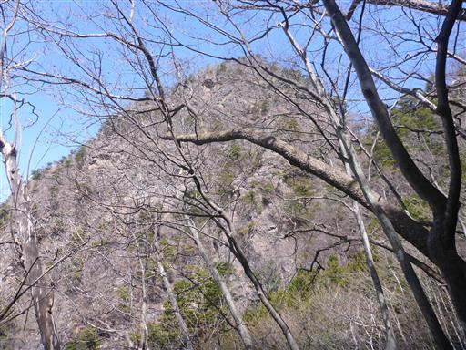
ピンクリボンはあるが、最後の方は道が不明瞭。
急斜面を適当に下っていく。
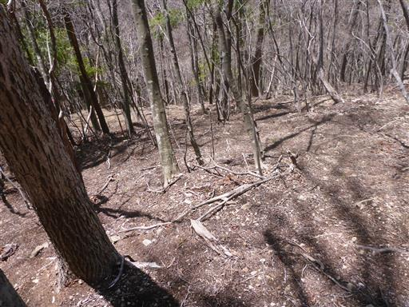
沢筋に降りてくる。この左上に登りに使った登山道があるが、
この沢をそのまま歩いて出合で登山道と合流する。
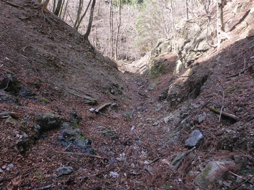
光を浴びて沢の水が輝いている。
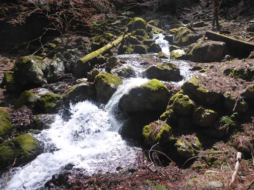
枯葉の中に見たことの無いものを発見。
調べてみたら、シロキツネノサカズキモドキという菌類の一種のようだ。
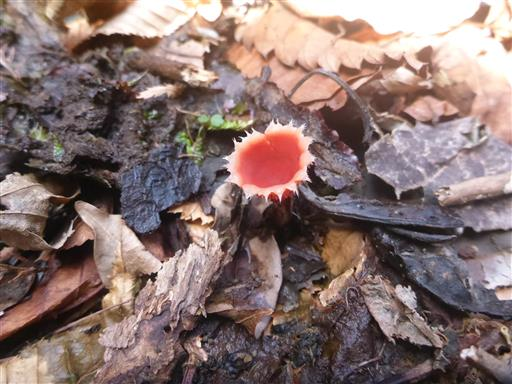
無事下山。
沢沿いの登山道での渡渉、碧岩の岩場など、全体的に難易度が高く
さすが西上州の岩山、という感じの登山道だった。
三段の滝、稜線からの展望、ともに素晴らしく、充実した山行だった。